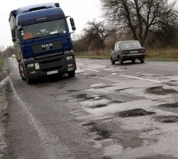

×

Мер міста Крупець, Дем'ян Пилипака, оголосив про великий план з реконструкції доріг, що ведуть до міста. Цей амбіційний проект передбачає покращення і розширення дорожньої інфраструктури, щоб забезпечити безпечний та зручний в'їзд для мешканців та гостей міста.
Будівництво нових доріг стане важливим кроком у розвитку міста, сприяючи економічному зростанню та покращенню якості життя мешканців. Планується також створення нових зелених зон та пішохідних доріжок поруч із дорогами, щоб зробити місто більш привабливим для пішоходів та велосипедистів.
Запрошуємо всіх мешканців та гостей міста долучитися до цього захоплюючого проекту та спільно працювати над створенням кращого майбутнього для нашого прекрасного міста Крупець!